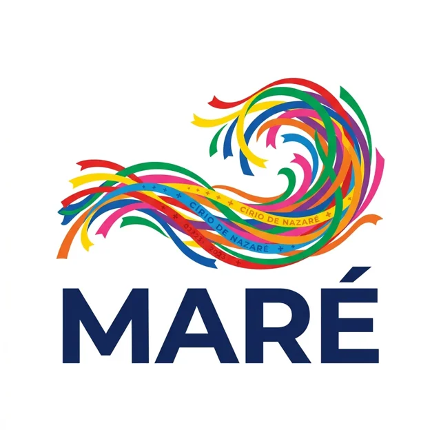
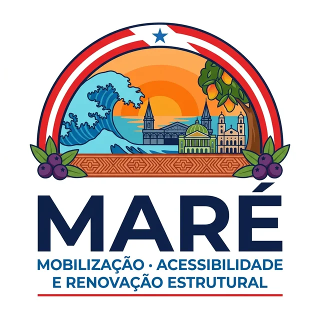
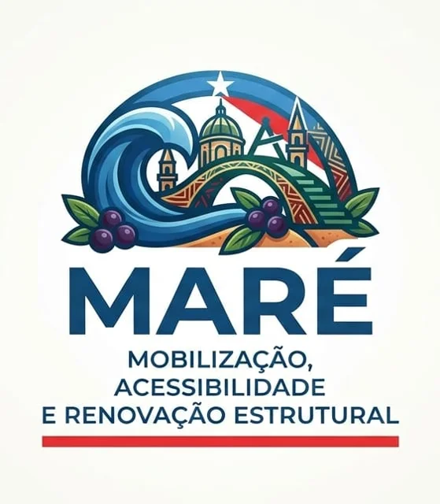

Missão, visão e valores
Missão
Transformar os alagamentos e a falta de acessibilidade de Belém em mapas, relatórios e soluções de baixo custo, dando voz aos moradores.
Visão
Ser, em 5 anos, a principal referência jovem em cidade acessível e drenagem urbana na Região Metropolitana de Belém.
Valores
Belém alaga, e quem mais sofre anda a pé
de chuva em menos de 24 horas em abril de 2026. A prefeitura decretou emergência.
Quando a maré alta coincide com chuva forte, a água não escoa e o alagamento piora.
respostas do nosso formulário apontaram calçadas, acessibilidade e alagamentos como o maior problema.
Mapa MARÉ, em 3D
O morador marca o local no mapa, escolhe o tipo de problema e envia uma foto. O mapa mostra o relevo de Belém em 3D, para ver onde a água se acumula.
- Alagamento, calçada quebrada, falta de rampa e bueiro entupido
- Fotos sem rostos nem placas, com autorização
- Medidor de risco com chuva e maré
- Exporta os dados para relatórios
Três fases em seis meses
Mapa dos relatos
Meses 1 a 3. Formulário com foto e local, primeiros 30 pontos em Souza, Jurunas, Cidade Velha e Umarizal.
Relevo, chuva e maré
Meses 4 e 5. Dados de chuva e maré ao lado do mapa e relatório de prioridades para a prefeitura.
Risco e alerta
Mês 6 em diante. Estimativa de risco por bairro e aviso para quem se cadastrar, validado com a Defesa Civil.
Não existe hoje um dado pronto de alagamento em tempo real. Mostramos chuva, maré e os relatos dos moradores. O risco é uma estimativa e dizemos isso claramente.
O que pedimos e o que oferecemos
Prefeitura e vereadores
- Pedimos: dados de pluviômetros, pontos críticos e um contato técnico.
- Oferecemos: o mapa e um relatório de prioridades, sem custo.
Defesa Civil e universidades
- Validação do risco e dados históricos.
- Orientação técnica da UFPA e da UEPA.
Escolas, associações e comércio
- Pontos de coleta de relatos e a campanha "Bueiro Livre".
- Divulgação e apoio com materiais.
O que 96 moradores responderam
Bairros mais citados: Souza (8), Jurunas (7), Cidade Velha e Umarizal (6). Lixo e alagamento andam juntos: lixo entope bueiros.
Logos em votação
A equipe vai escolher a logo por votação. Estas são as opções atuais.


